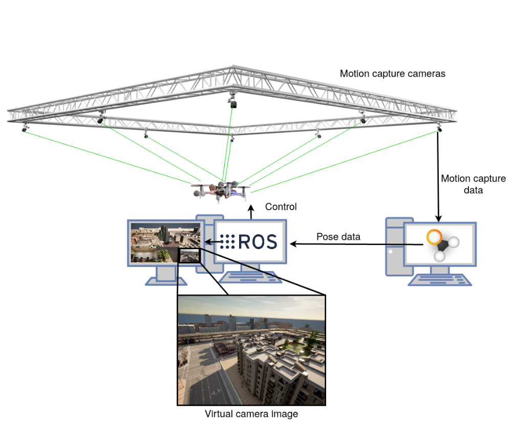
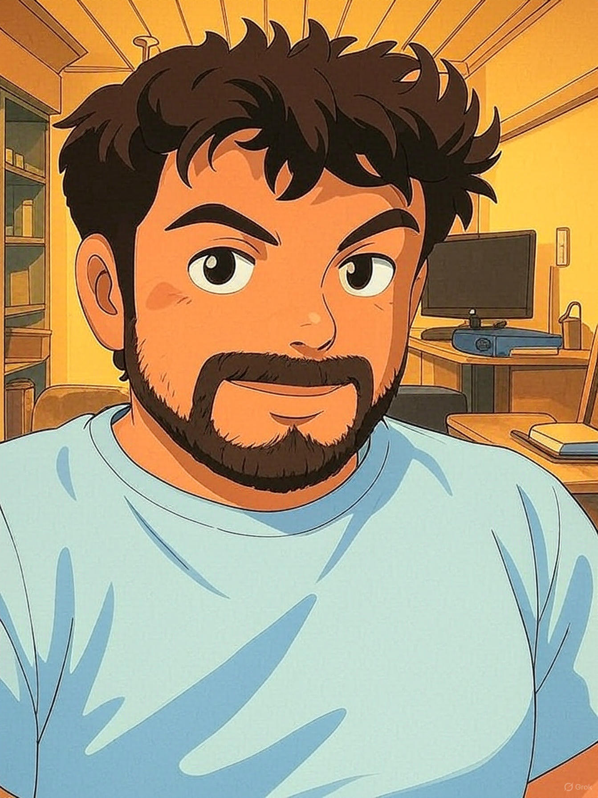
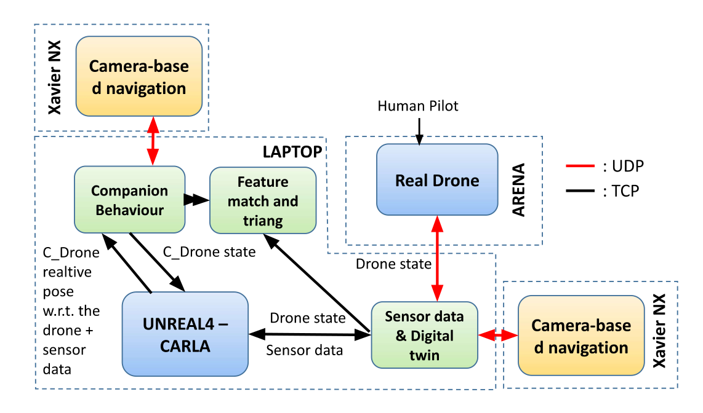

Indoor vehicle-in-the-loop simulation of unmanned micro aerial vehicle with artificial companion
VIL framework (an extension of HIL) for drone arena, with a use case of a companion drone in cooperative navigation.
Currently pursuing a Ph.D. at the Norwegian University of Science and Technology (NTNU), Trondheim, Norway. My research focuses on optimization, graph theory, spectral methods, network design and geometric deep learning, and their applications in urban mobility, distributed systems and robotics.
Graduated with a Master's in Robotics & Artificial Intelligence with specialization in Computer Science for Autonomous Driving from KTH Royal Institute of Technology [Sweden], and as an exchange student at Eötvös Loránd University [Hungary].
Passionately curious about robots, AI, machine learning, mathematics, computer vision, astrophysics, sensor systems, physics, startups & photography.


VIL framework (an extension of HIL) for drone arena, with a use case of a companion drone in cooperative navigation.

Drone navigation enhancement using companion drone in VIL simulation

C++ based software to stream events from neuromorphic camera to NN, for generating application specific commands
ROS based humanoid robot head motion control, for emulating human head-eye movement